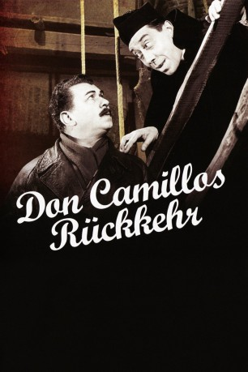

#934 Don Camillo und Peppone 2 - Don Camillos Rückkehr
Alternativ: The Return of Don Camillo (Englischer Titel)
 
 IMDB-Wertung: 7.3 / 10
IMDB-Wertung: 7.3 / 10  Metascore: 0
Metascore: 0 
Italienische Komödie und Teil der bekannten Don-Camillo-Reihe von 1953. Der streitsüchtige Priester Don Camillo (Fernandel) ist in eine neue Gemeinde ins Gebirge verbannt worden. Unten im Tal vermisst ihn Bürgermeister Peppone an allen Ecken und Enden. Doch Don Camillo kann zu seinem Erzfeind zurückkehren und das alte Spiel wieder von vorne beginnen.
Jahr: 1953
Dauer: 115 Minuten
FSK: 12
Land: Frankreich Studio: Dear FilmTonspuren:
Untertitel: Deutsch,
Auflösung: 1080p (1440x1080) Größe: 8140 MB
Genre: Komödie
Regisseur: Julien Duvivier
Drehbuch: Giovanni Guareschi, Julien Duvivier, René Barjavel, Julien Duvivier, Giuseppe Amato
Soundtrack: Alessandro Cicognini
Darsteller:
 Fernandel als Don Camillo
Fernandel als Don Camillo Gino Cervi als Giuseppe 'Peppone' Bottazzi
Gino Cervi als Giuseppe 'Peppone' Bottazzi Saro Urzì als Brusco - il barbiere
Saro Urzì als Brusco - il barbiere- Enzo Staiola als Mario Cagnola
- Édouard Delmont als Il dottor Spiletti
- Paolo Stoppa als Marchetti
- Alexandre Rignault als Franceso 'Nero' Gallini
- Thomy Bourdelle als Cagnola
- Leda Gloria als Signora Bottazzi
- Charles Vissières als Il vescovo
- Claudy Chapeland als Beppo Bottazzi
- Tony Jacquot als Don Pietro
- Manuel Gary als
- Lia Di Leo als La maestrina
- Marco Tulli als Lo Smilzo
- Arturo Bragaglia als Il cantoniere
- Pina Gallini als
- Miranda Campa als Signora Spiletti
- Ruggero Ruggeri als Crocifisso
- André Hildebrand als (uncredited
- Robert Lombard als (uncredited
- Jean Mollier als (uncredited
- Rina Morelli als Bit part , uncredited
- Giovanni Onorato als (uncredited
- Gian Paolo Rosmino als (uncredited
- Bernardo Severoni als (uncredited
- Lino Solari als (uncredited
- Beppe Tosi als (uncredited
- Gloria Villar als (uncredited
Datei: X:\5-Pentalogie(A-Z)\Don Camillo und Peppone\Don Camillo und Peppone 2 - Don Camillos Rückkehr (1953, FSK12, 1440x1080).mkv seit 22.04.2015
Festplatte: HD Collection-3(N-Z)-6(A-Z)
 Es gibt insgesamt 8 Filme in der Gruppe '5-Pentalogie(A-Z)\Don Camillo und Peppone'
Es gibt insgesamt 8 Filme in der Gruppe '5-Pentalogie(A-Z)\Don Camillo und Peppone'